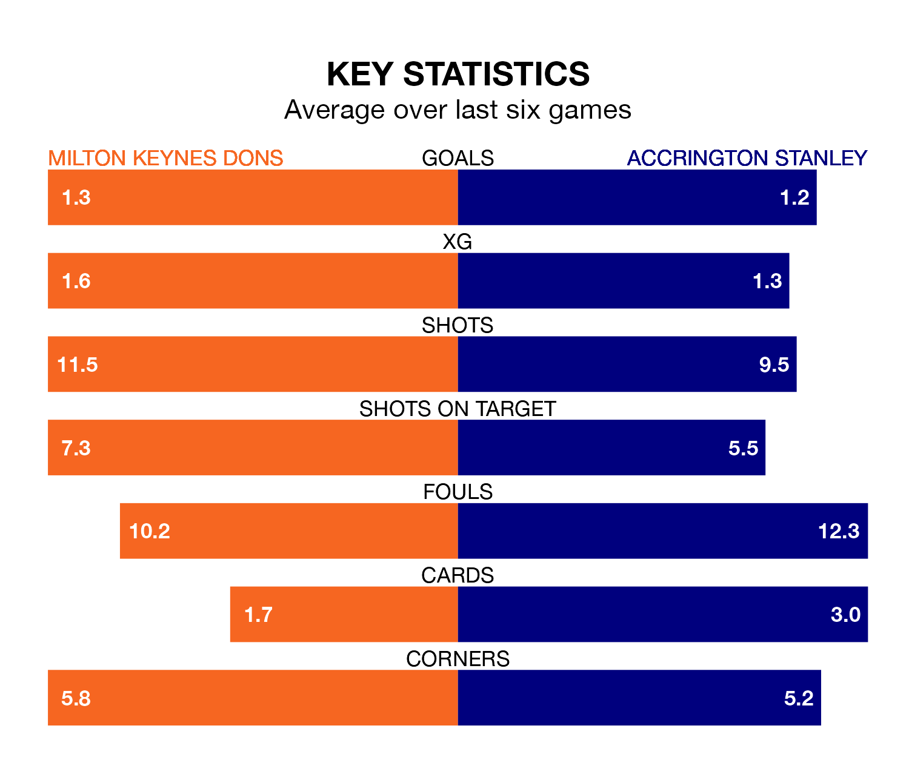

Milton Keynes Dons are heavy favourites to keep all three points at home in Saturday's kick-off against Accrington Stanley.
The Dons, who sit sixth in EFL League Two with 29 games played, are priced at 1.6 to seal victory at Stadium mk.
Sitting five places and six points behind them in the table, Accrington are 4.6 to win with *Betting Company*, while the draw is at 4.2.
With 47 goals in 29 games so far this season, Milton Keynes are scoring more than average in the league with 1.6 goals per game. And they are conceding fewer than average, letting in 37 goals at a rate of 1.3 per game.
Accrington, meanwhile, are below average scorers, with 1.4 goals per game, compared to a league average of 1.5. They have conceded 1.3 goals per game.
In the last 10 years, Milton Keynes and Accrington have played each other on eight occasions. They won three each, and they drew twice.
On average, the Dons scored 1.2 goals and Accrington 1.1 in those matches.
Their last meeting was on October 21, when Accrington won 1-0 at home.
Dons are in mixed form in EFL League Two, with three wins and three losses from their last six games.
With two wins and two draws over that period, Stanley's form is slightly worse – they have taken eight points from 18, compared to the Dons' nine.
Milton Keynes's last match was on February 3, a 1-0 loss against Barrow.
Accrington drew 0-0 with Grimsby Town last time out, also on February 3.
Updated: 10:01 (UTC), 06/02/24